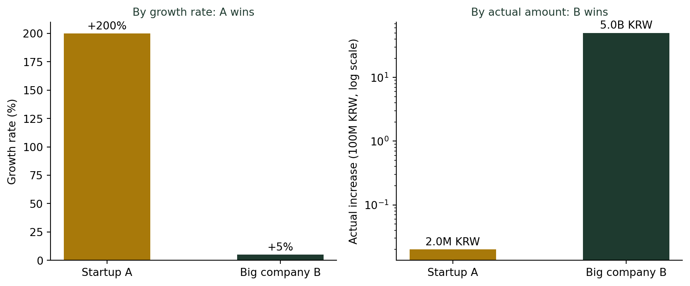
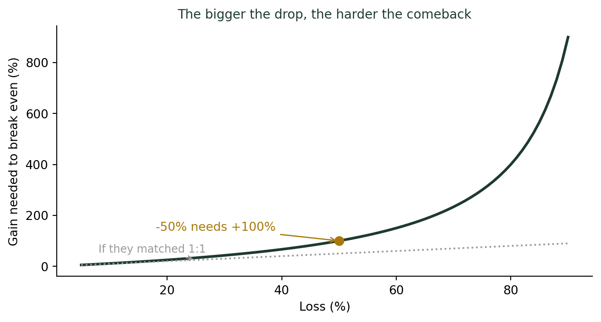

(비율과 백분율의 함정) 매출이 50% 늘었다는 말에 속지 않는 법
통계기초
기술통계
스타트업의 ‘매출 200% 성장’과 대기업의 ’고작 5% 성장’, 실제로 더 많이 번 쪽은 어디일까? 퍼센트 증가율 뒤에 숨은 기준값의 함정을 다룹니다.
“매출 200% 성장!” vs “고작 5% 성장”
스타트업 관련 기사를 읽다 보면 “매출 몇백 퍼센트 성장”이라는 제목이 유독 자주 보인다. 창업 강의에서 이런 기사를 예시로 들 때마다, 나는 학생들에게 꼭 되묻는다. “그래서 원래 매출이 얼마였는데요?” 스타트업 A가 보도자료를 냈다고 해보자. “전월 대비 매출 200% 성장!” 같은 날, 대기업 B는 실적 발표에서 담담하게 말한다. “이번 분기 매출 성장률은 5%였습니다.”
숫자만 보면 A가 B보다 40배는 더 잘나가는 것처럼 보인다. 그런데 실제로 두 회사의 통장에 얼마가 더 들어왔는지 확인해보면 이야기가 완전히 달라진다.
퍼센트는 기준값이 있어야 의미를 가진다
증가율은 이렇게 계산된다.
\[\text{증가율(\%)} = \frac{\text{증가분}}{\text{기준값}} \times 100\]
똑같은 “증가분”이라도 기준값이 작으면 증가율은 크게, 기준값이 크면 증가율은 작게 나온다. 반대로 말하면, 증가율만 보고는 실제로 얼마가 늘었는지 전혀 알 수 없다.
스타트업 A vs 대기업 B, 실제 숫자
| 구분 | 이전 매출 | 이후 매출 | 증가율 | 실제 증가액 |
|---|---|---|---|---|
| 스타트업 A | 100만 원 | 300만 원 | +200% | 200만 원 |
| 대기업 B | 1,000억 원 | 1,050억 원 | +5% | 50억 원 |
증가율은 A가 40배 높지만, 실제로 더 많이 번 쪽은 B다. B의 증가액은 A의 2,500배다.
언론이나 광고에서 신생 기업이 유독 “몇백 퍼센트 성장”을 강조하는 이유가 여기에 있다. 기준값이 작을수록 퍼센트는 쉽게 커진다. 틀린 계산은 아니지만, 그 숫자만으로 실제 규모를 판단하면 안 된다.
더 깊이: 성장률에는 기하평균이 맞다
여러 기간의 증가율을 하나로 요약할 때는 산술평균이 아니라 기하평균을 써야 한다. 강의노트 〈기초통계 2. 데이터와 통계 — 측정형 데이터〉에서는 기하평균을 “비율 자료나 성장률 분석에 적합”한 대표값으로 소개한다. 매출 성장률처럼 %로 표현되는 값을 여러 해에 걸쳐 비교할 때 특히 중요하다.
“-50%, 그다음 +50%”는 원점으로 돌아오지 않는다
퍼센트의 함정은 여기서 끝나지 않는다. 주가가 하루는 50% 떨어지고, 다음 날 50% 오른다면 원래 가격으로 돌아올까?
기준값이 움직이면 퍼센트도 어긋난다
- 첫날: 100 → –50% → 50
- 다음날: 50 → +50% → 75
떨어질 때의 기준값은 100이었지만, 오를 때의 기준값은 이미 50으로 줄어 있다. 그래서 “50% 떨어지고 50% 올랐다”고 해도 원금 100은 돌아오지 않고 75에 머문다. 손실의 기준값은 크고, 회복의 기준값은 작다.

10% 하락은 11.1% 상승이면 회복되지만, 80% 하락은 무려 400% 상승이 있어야 원금이 회복된다. 손실이 커질수록 이 격차는 기하급수적으로 벌어진다.
결론: 퍼센트를 볼 때 항상 물어야 할 것
증가율 뒤에 숨은 기준값 확인하는 법
- “몇 % 늘었다”는 말을 들으면 곧바로 “그래서 원래 얼마였는데?”를 묻는다.
- 기준값이 작은 대상(신생 기업, 작은 지표)은 퍼센트가 쉽게 부풀려진다는 점을 감안한다.
- 하락과 상승이 반복될 때는 각각 다른 기준값에서 계산된다는 것을 기억한다. 하락폭이 클수록 회복에 필요한 상승폭은 훨씬 크다.
- 비교할 때는 퍼센트와 절대량을 함께 본다. 둘 중 하나만 보면 그림의 절반만 보는 것이다.
퍼센트는 숫자를 비교하기 편하게 만들어주는 도구이지만, 그 뒤에 있는 기준값을 감추기도 한다. “얼마나 늘었는가”를 제대로 알고 싶다면, 비율과 함께 반드시 원래 숫자를 확인해야 한다.
나는 요즘도 “매출 300% 성장” 같은 창업 기사를 보면 반사적으로 원 매출부터 검색해본다. 습관을 들이고 나니, 화려한 제목에 속는 일이 눈에 띄게 줄었다.